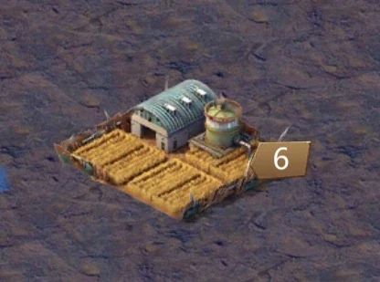
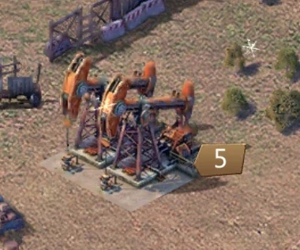
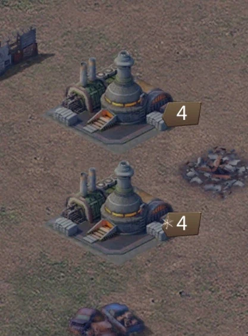
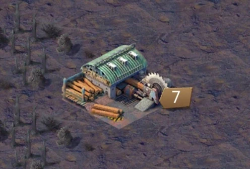

パズル＆サバイバル
建設と前提
更新日：2026年11月25日
コントロールセンター（CC）のレベルアップに必要な前提建物と、建設で止まらないための運用をまとめたページです。前提の連鎖はツリー図で全体像を、数値は全表で確認できます。建設マスターや加速アイテムの使い方もこのページで扱います。
- 前提建物は着工の1つ前から先回りで上げる。城壁は常にCCと同レベル
- 建設時間には「素の時間」と「実効時間」の2系統があり、期限の逆算は素の時間側で見積もる
- ★3建設マスターは資源削減の定番。買うなら恩恵期間が長い初日〜2日目
- 加速は要所（後半のCC・城壁）まで温存し、焦土鉱洞などで確保する
前提建物は「先回り」で上げる

- CCのレベルアップには、それぞれ前提建物のレベル到達が必要。前提が未達だと、資源と加速アイテムが揃っていてもCCの建設に着工できず足止めされる
- 建設枠が空いているタイミングで次の前提を先に建てておくことが、調査・体験談等で共通して挙がる最重要の進め方
- 城壁は常にCCと同じレベルが条件。戦争ホールと大使館は前提の連鎖が長いため、常に最大レベルを目安に上げておくのが安全
- 建設枠は2枠に保つのが前提級の効率差。第二建造隊列（250ダイヤ／2日、アイテム「ゴールドハンマー」を所持していればそちらを優先）を追加すると2件同時進行でき、進行速度が大きく上がるとされる
アイテム「建築工学」別途必要（単価は5ダイヤ説／10ダイヤ説の両論／総数273〜314個）
読み方：左のCCレベルに着工するには、右の建物を先にそのレベルまで上げておく必要があります。城壁は全レベルで「CCと同レベル」が条件です。
CCのレベルアップには前提建物が必要です。前提は「図で全体像（上のツリー図）・表で数値」の役割分担で載せます。表は序盤分まで含めた全表です。
| CCレベル | 主な前提建物（城壁は全レベルでCCと同レベルが条件） |
|---|---|
| Lv9 | 監視塔Lv8 |
| Lv10 | 兵舎Lv9 |
| Lv11 | 病院Lv10 |
| Lv12 | 車両拠点Lv11 |
| Lv13 | 監視塔Lv12 |
| Lv14 | 木材場Lv13 |
| Lv15 | 生物研究所Lv14（現行仕様。2023年12月の仕様変更前は交易所Lv14） |
| Lv16 | ガスステーションLv15 |
| Lv17 | 武器庫Lv16（現行仕様。2023年12月の仕様変更前は鋼材収集工場Lv16） |
| Lv18 | ファイターキャンプLv17（前提にブートキャンプLv17） |
| Lv19 | 大使館Lv18 |
| Lv20 | ライダーキャンプLv19（前提に倉庫Lv19） |
| Lv21 | 木材場Lv20 |
| Lv22 | 戦争ホールLv21（前提に大使館Lv21）＋アイテム「建築工学」が別途必要（単価は5ダイヤ説／10ダイヤ説の両論、総数273〜314個／予算は多い方＝10ダイヤ×314個で見ると安全） |
| Lv25 | 研究所Lv24（あわせて城壁Lv24） |
| Lv30 | シューターキャンプLv29（あわせて城壁Lv29） |
Lv9〜14の行は参考値です。Lv15以降は確認した現行仕様で統一しています。施設名にはゲーム内表記のゆれがあります。
建設の運用ルール
- 城壁は常にCCと同レベルが条件。1枠を城壁専用に回し続けると止まらない
- 大使館・戦争ホールは連鎖が長い（戦争ホール←大使館←…）。常時最大レベルを目安に先回りする
- 倉庫の後回しは事故のもと：CC20の着工時にライダーキャンプLv19とその前提の倉庫が未達で停滞した実例がある
- 指揮官タレント「建造特急」は、発動後すぐに開始した建設を20%短縮する。CCや城壁の着工直前に発動するのが使い方。タレントはポイ活帯では「経済」一点集中が定石
- アイテム「建築ブースト」も使用後に開始した建設に効くため、着工直前に使う
- 建設時間には短縮なしの「素の時間」と短縮適用後の「実効時間」の2系統があり約25%異なる（Lv22：素＝約8日10時間／実効＝約6日9時間）。期限の逆算は素の時間側で見積もる
★3建設マスターは初日〜2日目に買う 買う物
- 課金するなら定番とされるのが、指揮官装備の「★3建設マスター」（建築装備）。建物のレベルアップに必要な資源を、部位ごとに「固定額＋割合」で削減する
- 削減の例：武器★3は食料-100万かつ-5%、頭★3は鋼材-20万かつ-5%、盾・胴★3は木材-50万かつ-2.5%、指・足★3はガス-2.5%など
- 低レベル帯では要求資源が削減額以下になり、実質ゼロ消費で建てられることもある
- 注意 指揮官情報画面で「装備して初めて効果を発揮する」。買っただけでは無効
- 実績：無課金で約3週間かかるラインを約2週間（14日）に短縮した実践報告がある。Lv15くらいまではほぼ資源消費なしで進められ、資源生産施設もゼロ消費で上げられるため生産量が上がる好循環になる、という評価
- 買うなら初日〜2日目が目安（恩恵を受ける期間が長い）。到達目安の「課金：目安17日（Lv22到達まで）」は、この★3建設マスターを初日に買い、永久建築隊列も購入する前提（合計約1,500円）の数値。前提なしに17日だけを見るのは危険（建築マスターなしの課金ではLv22に29日かかった実例あり）
価格は610円〜800円程度の幅で報告されています（iOS 800円／Android 670円という提示と、610円での購入実績の両方があります）。時期による価格改定の階段があり、現行（2026年8月の価格改定後）は800円帯が中心とされます。OS・時期で変動するため断定はできません。また、装備自体が建設時間を直接短縮するわけではなく、削減するのは資源のみです。「時間も大幅に削減」という表現もありますが、実態は資源待ちが解消されることによる間接的な短縮、と整理するのが正確です。
加速アイテムの確保策
ポイ活で必要な加速は「汎用ブースト」と「建造ブースト」の2種。CC単体の建設時間には、短縮なしの「素の時間」と短縮適用後の「実効時間」の2系統があり、約25%異なります。
期限の逆算は素の時間側で見積もるのが安全で、いずれにしても短縮手段の積み重ねが前提になります。
- 焦土鉱洞イベント：Lv5まで進めると1時間加速×100個（＝100時間分）が得られる。トークンだけでは届かない分は、ダイヤを使ってでも取る価値があるとされる、加速不足の最終解決策
- 日次ショップで買う：廃墟挑戦ショップで汎用ブースト60分、サバイバルショップで建造ブースト60分（いずれも1日購入上限あり、ショップは午前9時リセット）。ギルドショップでも汎用ブーストを入手できる
- アース鉱窟を常時回す：CC16で解放される鉱窟でアースを採掘し、交換ショップで資源（特に鋼材・ガス）に替えるのが後半の資源不足の解消策。1回の占拠で6時間採掘できるため、途切れないように回し続ける。略奪回避のコツとして、高レベル鉱山は狙われやすいのでLv1〜2に置き、階層は手入力で70〜90番台の過疎フロアを使うと奪われにくい、という実践知がある
- 短縮効果を重ねる：研究「発展：建造I」で5%短縮。指揮官タレント「建造マスターI／II」は各5%、「建造特急」は発動直後に開始する建設を20%短縮するためCC着工の直前に発動する。アイテム「建築ブースト」も使用後に開始した建設に効くので、CC着工の直前に使うのが要点。英雄の軍団スキル（フィネスの建設速度UPなど）は所持しているだけで自動発動する。ギルドヘルプは大使館Lvを上げると受けられる上限が増える
- 生物研究所の内政スキル：建設短縮・採集速度アップのスキルがあり、解放条件のエピソード10章は7日以内クリアが目標とされる（エピソードは11章までで十分という整理）
加速は要所まで温存し、後半のCC・城壁に投入するのが基本です。ただし温存し過ぎて、終盤の建設が素の時間（6日超）のまま残るのも失敗パターンとして挙がっています。
★3建設マスター装備の部位別 削減表
★3建設装備は、建設コスト（資源）を部位ごとに下げます。時間は短縮されません。数値表は照合済みの値を載せています。
| 部位 | 固定額の削減 | 割合の削減 |
|---|---|---|
| 武器 | 食料 −100万／鋼材 −20万 | 食料 −5% |
| 盾 | 木材 −50万／ガス −10万 | 木材 −2.5% |
| 胴 | 木材 −50万／ガス −10万 | 木材 −2.5% |
| 頭 | 食料 −100万／鋼材 −20万 | 食料 −5% |
| 指 | 木材 −50万／ガス −10万 | 木材 −2.5% |
| 足 | 食料 −100万／鋼材 −20万 | ガス −2.5% |
- 6部位そろえた合計：固定額で食料 −300万／木材 −150万／鋼材 −60万／ガス −30万、割合は各資源 −5%目安
- 高Lvほど割合削減の効きが大きくなるため、★3建設マスターは初日〜2日目にそろえるほど総削減量が増えます
生産施設はどこまで上げるか
- 両論 ラッシュ派は「生産施設の過剰育成は非効率」、「上限まで上げる」派もいます
- 条件で分けると整理できます：無課金は最小限（建設枠と資源を前提施設に回す）、★3建設マスターがある場合は上げ得（削減が効いて回収が早い）
- どちらにしても、科学研究所と各種キャンプの稼働を止めないことが先です




意見が割れている点：不足する資源はLv帯で変わる
意見が割れている点（両論）
- 序盤〜中盤は木材・鋼材がかなり不足する、という見方が中心
- 一方で「Lv20以降はガスが最大の難所」という見方もあり、CC22建設時には食料とガスも不足したという記録もある
- 段階ごとに不足資源が変わる前提で、資源アイテムは使う直前まで温存するのが安全
- CC単体の建設コストだけを積み上げても、Lv22到達までに必要な量は下のとおり（前提建物・城壁・研究分は別）
- 総量の概数をうたう情報もあるが、算出根拠が確認できないものはこのページでは採用していない